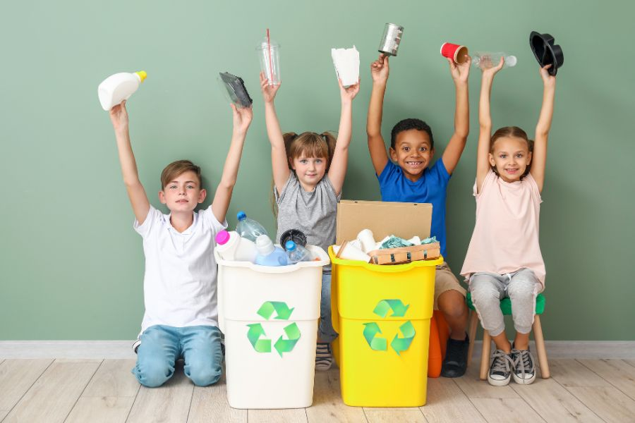

En el Centro Escolar Jose Marti, cada viernes por la tarde se lleva a cabo la "Hora del Reciclaje". La profesora Laura Martínez (la mujer de camisa azul) pasa por los puestos con el contenedor gris marcado con el símbolo universal de reciclaje.